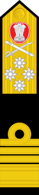
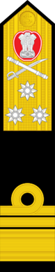
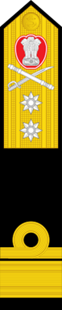
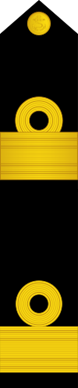
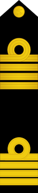

Stories of Valour & Patriotism

The Indian Navy is the naval branch of the Indian Armed Forces. The President of India is the Supreme Commander of the Indian Navy. The Chief of Naval Staff, a four-star admiral, commands the navy. The Indian Navy traces its origins back to the East India Company's Marine which was founded in 1612 to protect British merchant shipping in the region. In 1793, the British East India Company established its rule over eastern part of the Indian subcontinent i.e. Bengal, but it was not until 1830 that the colonial navy was titled as His Majesty's Indian Navy. When India became a republic in 1950, the Royal Indian Navy as it had been named since 1934 was renamed to Indian Navy.
The primary objective of the navy is to safeguard the nation's maritime borders, and in conjunction with other Armed Forces of the union, act to deter or defeat any threats or aggression against the territory, people or maritime interests of India, both in war and peace.
Through joint exercises, goodwill visits and humanitarian missions, including disaster relief, Indian Navy promotes bilateral relations between nations.
It was founded on 5 September 1612; 407 years ago. Its colours are Navy blue and white. They march on the tune Jai Bharati (Victory to India). The Indian Navy celebrates Navy Day on 4 December every year. The current Chief of the Naval Staff (CNS) is Admiral Karambir Singh (PVSM, AVSM), Vice Chief of the Naval Staff (VCNS) is Vice Admiral G Ashok Kumar (AVSM, VSM) and Deputy Chief of the Naval Staff (DCNS) is Vice Admiral M. S. Pawar (AVSM, VSM). Notable commanders: Admiral S. M. Nanda, Vice Admiral Ram Dass Katari
Official Website: indiannavy.nic.in
The maritime history of India dates back to 6,000 years with the birth of art of the navigation and navigating during the Indus Valley Civilisation. A Kutch mariner's log book from 19th century recorded that the first tidal dock India has been built at Lothal around 2300 BC during the Indus Valley Civilisation, near the present day harbour of Mangrol on the Gujarat coast.
The Rig Veda, credits Varuna, the Hindu god of water and the celestial ocean, with knowledge of the ocean routes and describes the use of ships having hundred oars in the naval expeditions by Indians.
The origins of the Indian Navy date to 1612, when an English vessel under the command of Captain Best encountered the Portuguese. Although the Portuguese were defeated, this incident along with the trouble caused by the pirates to the merchant vessels, forced the British to maintain fleet near Surat, Gujarat.
In the 21st century, the Indian Navy has played an important role in maintaining peace for India on the maritime front, in spite of the state of foment in its neighbourhood. It has been deployed for humanitarian relief in times of natural disasters and crises across the globe, as well as to keep India's maritime trade routes free and open.
The Indian Navy Motto: Sham No Varunah (May the Lord of the Water be auspicious unto us)
| OFFICER RANKS | ||
|---|---|---|
| Rank | Shoulder/Sleeve Insignia | Equivalent NATO Code |
| Admiral of the Fleet (Honorary/Wartime Rank) |
OF-10 | |
| Admiral (Held only by the Chief of the Naval Staff) |
 | OF-9 |
| Vice Admiral |  | OF-8 |
| Rear Admiral |  | OF-7 |
| Commodore |  | OF-6 |
| Captain |  | OF-5 |
| Commander | OF-4 | |
| Lieutenant Commander | OF-3 | |
| Lieutenant | OF-2 | |
| Sublieutenant | OF-1 | |
| OTHER RANKS | ||
| Rank | Shoulder Insignia | - |
| Master Chief Petty Officer 1st | ||
| Master Chief Petty Officer 2nd Class | ||
| Chief Petty Officer | ||
| Petty Officer | ||
| Leading Seaman | ||
| Seaman 1st Class | NONE | |
| Seaman 2nd Class | NONE | |